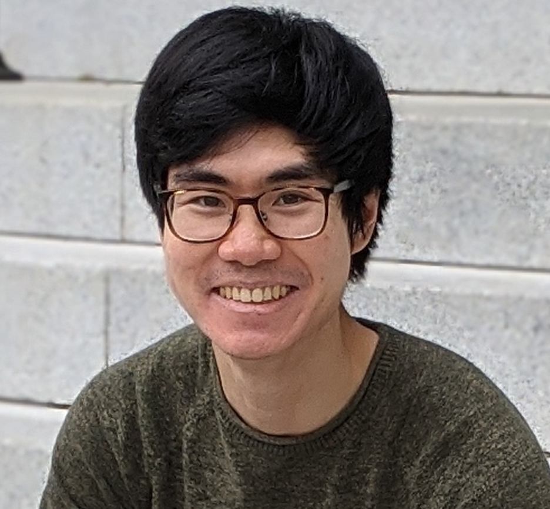
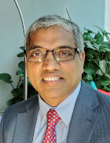

Keynote & Invited Speakers
Keynote Speakers
Sanmi Koyejo
Assistant Professor, Stanford University
Christian Dallago
Senior Solutions Architect in Life Sciences, Nvidia
Carla Gomez
Professor, Cornell University
David Leslie
Professor, Alan Turing Institute
Sara Mostafavi
Associate Professor, University of Washington

Albert Gu
Assistant Professor, Carnegie Mellon University
Invited Speakers
Panel I – Large Language Models Foundational Research
Alexander Rush
Associate Professor, Cornell University

Ni Lao
Staff Research Scientist, Google
Lingfei Wu
Engineering Manager, Pinterest
Tuo Zhao
Assistant Professor, Georgia Tech
Panel II – Bridging the Gap: LLMs for Life Sciences
Lucy Colwell
Associate Professor, University of Cambridge

Ramana Daluvuri
Professor, Stony Brook
Qiaozhu Mei
Professor, U Mich Ann Arbor
Jinbo Xu
Professor, Toyota Tech Institute
Alexander Huth
Assistant Professor, UT Austin
Panel III – Next Scientific Breakthroughs – Problems, Datasets, Benchmarks
Mauro Calabrese
Associate Professor, UNC Chapel Hill

Predrag Radivojac
Professor, Northeastern University
Xia "Ben" Hu
Associate Professor, Rice University
Grey Nearing
Assistant Professor, University of California Davis
Erin Molloy
Assistant Professor, Univ Maryland College Park